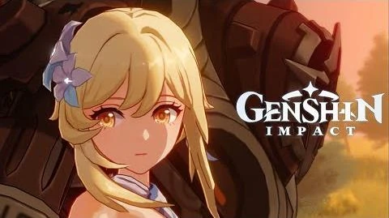

Teyvat & Unknown · Organizations & Factions
Abyss Order
The Abyss Order is a hostile faction whose members include hilichurls and other Abyss creatures. Its plans are tied to the Traveler’s twin and the aftermath of Khaenri’ah’s destruction.

A faction with a personal connection
The Abyss Order is a hostile faction whose forces include Abyss creatures and transformed people. It is led by the Traveler’s twin, which turns its conflict with the nations into a family story as well as a political one.
The Order’s members do not all act with the same level of knowledge. Ordinary creatures, commanders, and the twin occupy different positions. The game’s quests show a hierarchy rather than one uniform enemy.
Khaenri’ah and the Cataclysm
Many of the Order’s forces are connected to Khaenri’ah and the curse placed on its people after the Cataclysm. That connection does not mean every Khaenri’ahn joined the Order. Dainsleif is a clear example of a survivor who opposes its plan.
The distinction matters because the game presents several responses to the same disaster: survival, resistance, transformation, and revenge. Calling all of them ‘the Abyss’ hides the choices each character makes.
The Loom of Fate
The Order has worked toward the Loom of Fate, a project that can alter the Ley Lines and affect the world’s records. Its development shows that the faction’s plans are not limited to attacking cities; it wants to change how Teyvat itself remembers and defines people.
The Loom’s limits and consequences are revealed across quests, and later story chapters add more context to the Ley Lines. Use the linked quests for the current state rather than relying only on an early description of the machine.
The twin’s goal remains unresolved
The twin says the Traveler will understand after seeing the end of the journey. That statement explains the distance between them, but it does not reveal the entire plan. The Traveler has reasons to question both the Order’s methods and the twin’s conclusions.
This guide separates confirmed actions from predicted outcomes. The final purpose of the Abyss Order is still an open main-story question.
This is an original CoreGG reading guide, not an official HoYoverse article or a reproduction of the game text. Source links below identify the records used so you can check the original context.
Sources & references
Check these sources for the original game text and reference trail.